Tor
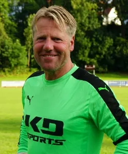
1Marco VolkweinFeldspieler
6Michael Apel
4Ronald Leonhardt
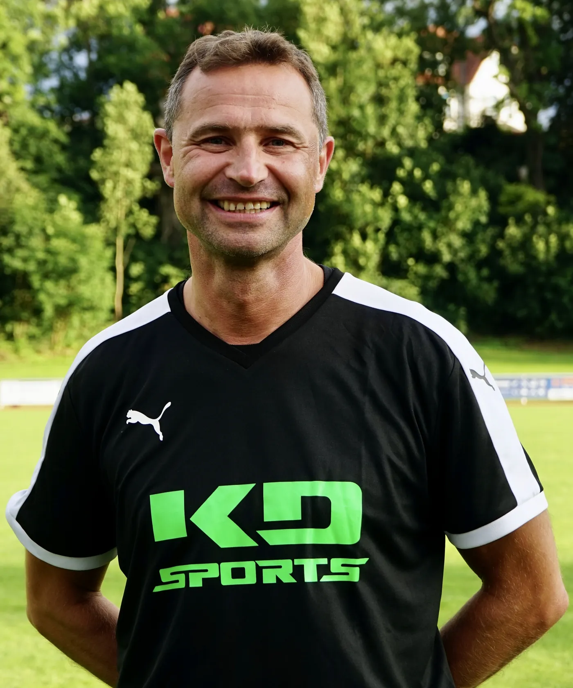
12Markus Kruse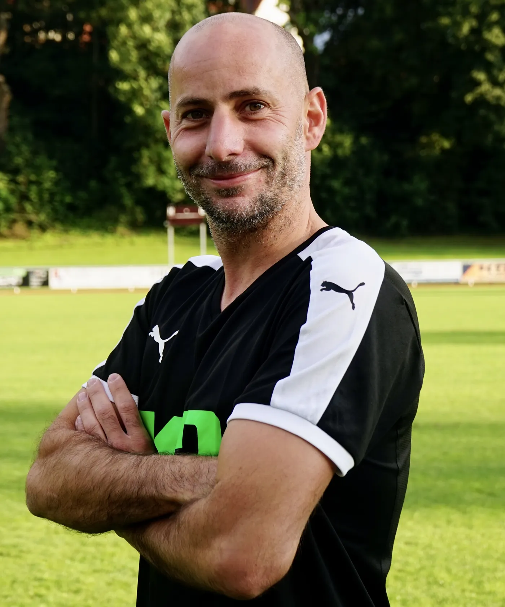
15Michael Grimm13Frank Hottenrott
16Andreas Eib
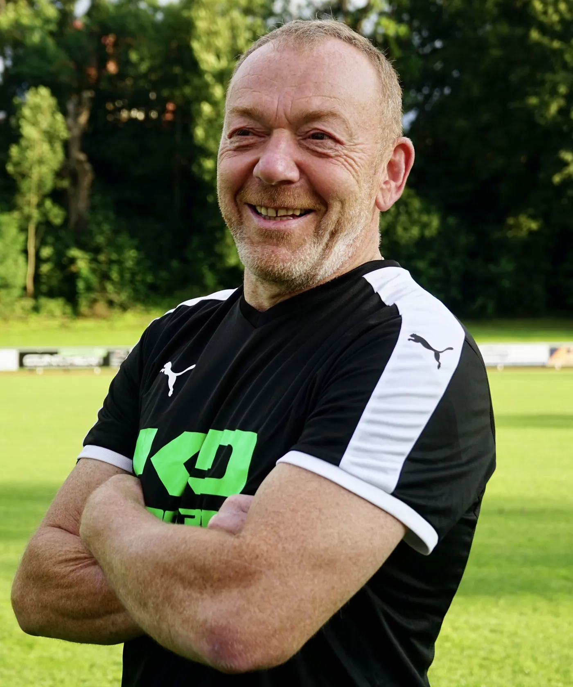
5Bernhard Heinevetter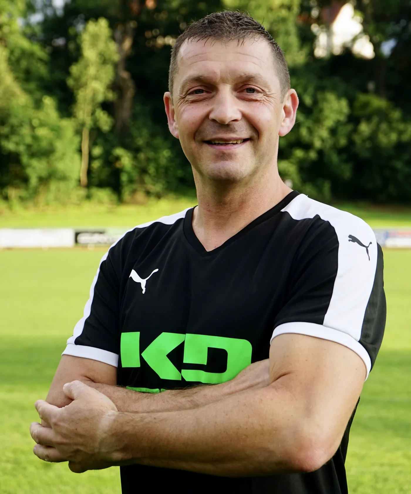
7Stefan Lerch8Michael Stellmann
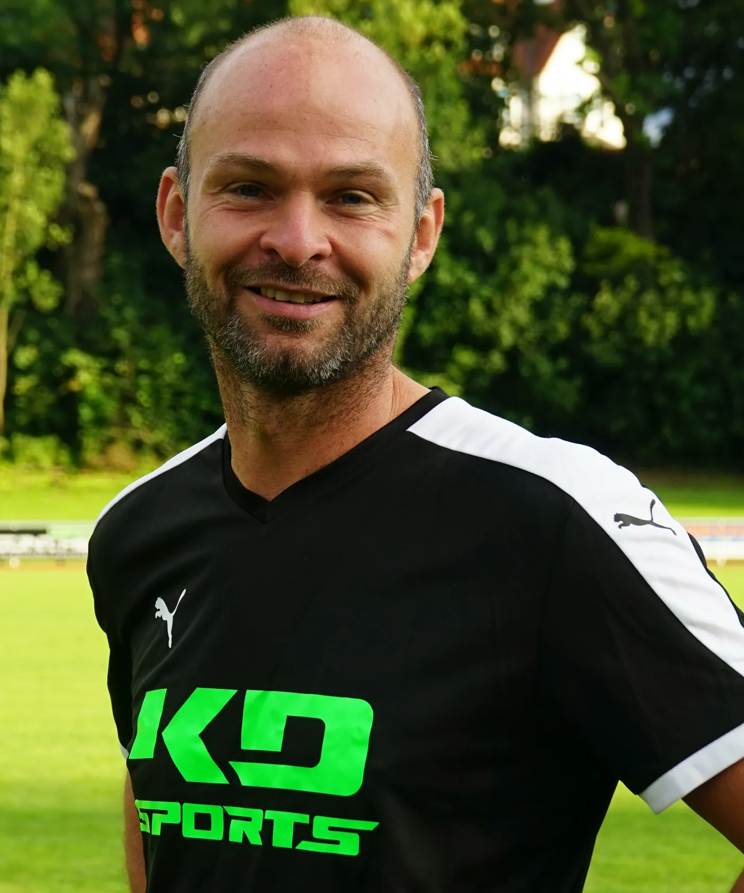
14Steffen Reinhardt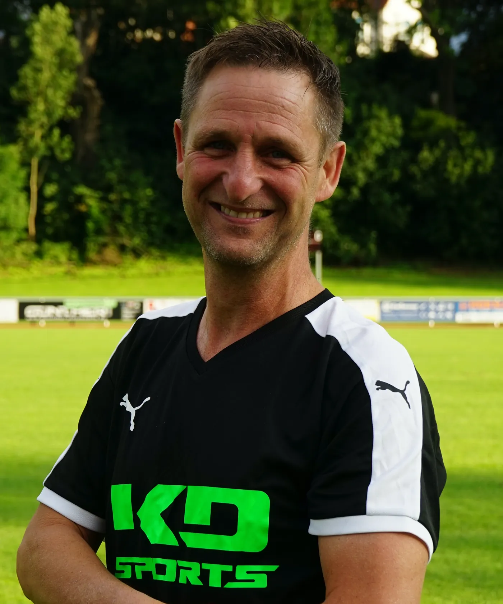
20Stefan Rohner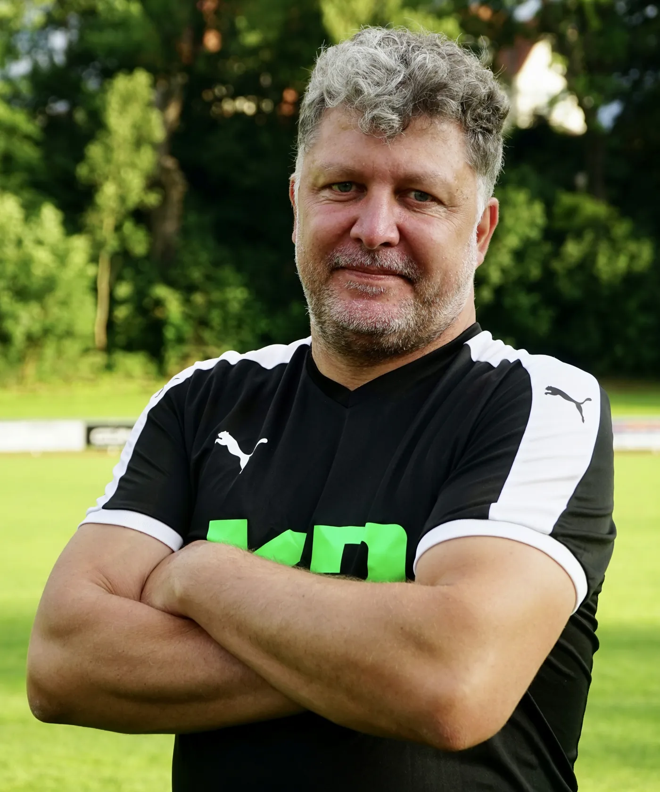
9Stefan Hoch21Stefan Hahne
2Mathias Siebert
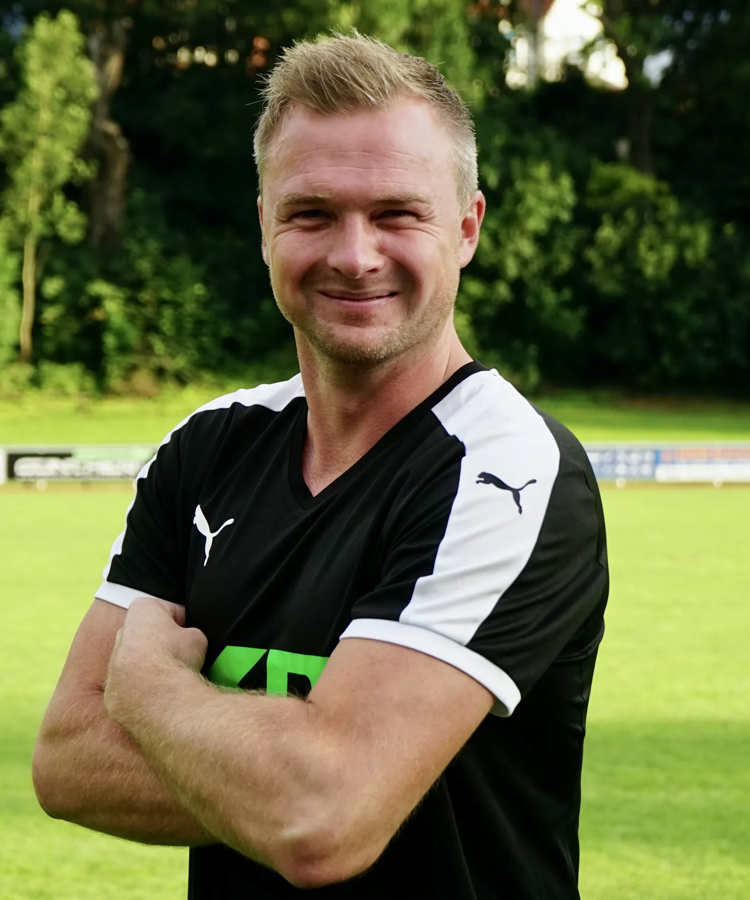
19Thomas Siebert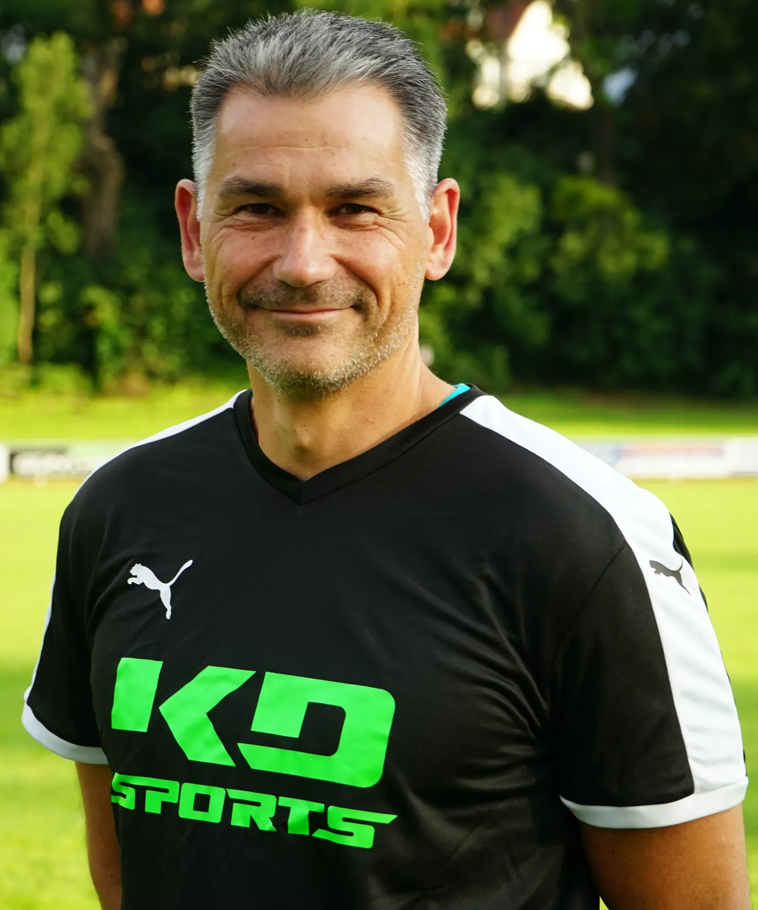
10Marco Wehr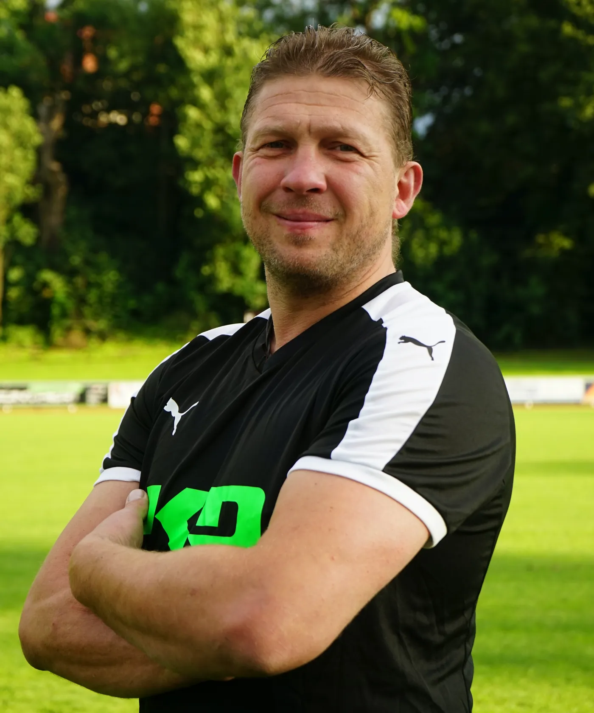
11Thorsten JünemannQuelle: www.sc1911-heiligenstadt.de · Stand 06.10.2026